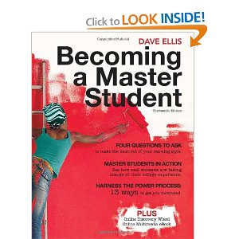
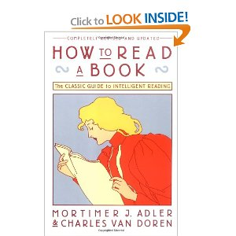

Table of Contents
Becoming a Master Student
- Used Copies on Amazon. I haven't read the 14th edition, but I suspect there's no major changes. It keeps referencing an “additional notes” on a $60 online version of the textbook, but again, I'm probably not missing that much and can get away with reading other books on the topics if I really want more information.
- Another book that I want to cross-reference with is Mortimer Adler's How To Read A Book. You know a book is good when its 5-star comments sound intelligent too. 
{kind=link}
{kind=link}
Personal Motivation
- Really work hard on applying the tips in the book. My time at college would have been so much more fruitful academically had I learned some of these skills beforehand, but hey, I can start right now. It's akin to learning how to shoot a basketball properly after “shooting” by throwing it up there any which way and hoping it goes in. Using proper form, shooting with one hand and using your whole body, and practicing lots close-by before you start moving back is a lot more boring/slow to learn and uses more energy to shoot, but man my accuracy is spot-on after I put years in of basketball practices that way! It's pretty hard to learn how to learn and to keep at it (especially things like active reading), but I am already starting to more effectively read books/articles and remember them better.
My Textbook Reconnaissance
- Shows where a course/book is going, giving you the big picture. That's useful because brains work best when going from the general to the specific. Getting the big picture before you start makes it easier to recall and understand details later on. Wow…interesting!
- Tidbits I'd like to read about are below:
| Page Number | Description |
|---|---|
| 19 | Changing habits…in particular I'd like to make a few habits |
| 50 | Motivation |
| 76 | Procrastination… “Trick yourself into getting started”! –> I'm going to just do 10 minutes of it, then you feel like doing it more |
| 111 | Remembering names. Takes a lot of effort for every name, but might be worth it for a few important ones |
| 114 | Outline view for wiki / notes so that only the headings are displayed, similar to Wikipedia's mobile display. Might be interesting to look into |
| 167 | Concept maps make the main ideas leap off the page of a writeup / book |
| 197 | Celebrate Mistakes. With great cost comes great reward…? Also, every Pixar movie starts out as the worst Pixar movie and looks like it might bomb the company until somehow they stay positive and pull through. |
| 249 | Very Important Persons, wow! Write them a letter if you have unfinished business to thank them for. |
| 252 | Text / instant messaging etiquette. I really want to know how I should / shouldn't keep long-distance relationships with friends on the same wavelength and other acquaintances not on the same wavelength. Also, when you communicate online, the people who receive your email will miss out on voice inflection and nonverbal cues that are present in face-to-face commmunication , and they often assume the worst-case scenario to boot! |
| 324 | Choose to Exercise. I am curious what benefits there are to exercising. Look for gradual results…nice! |
| 370 | Contributing: The art of selfishness. People who are satisfied with life can <more easily> share that satisfaction with others. Similar to love too, if you feel loved, it is easier to love others |
- Doing the exercises is really important to think about how it applies to you. Kind of like getting a paper or assignment forces you to learn.
- I bet a lot of feelings can cease after just sitting or doing something for 10 minutes or so
- This guy must be a homosexual or something

Goals
- I would like to:
- Learn piano / guitar theory so that I can improv a little with chords. Might not be too hard to do if I focus and find a good teacher / book